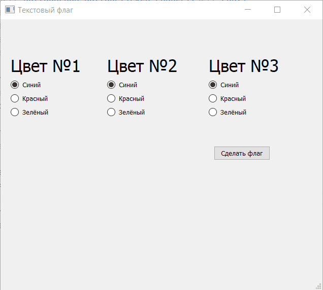
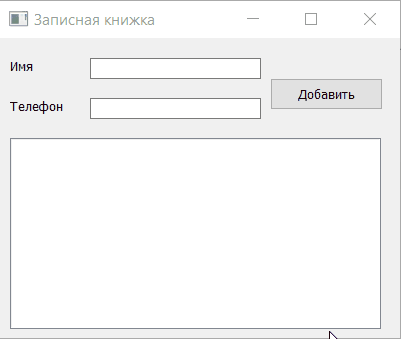
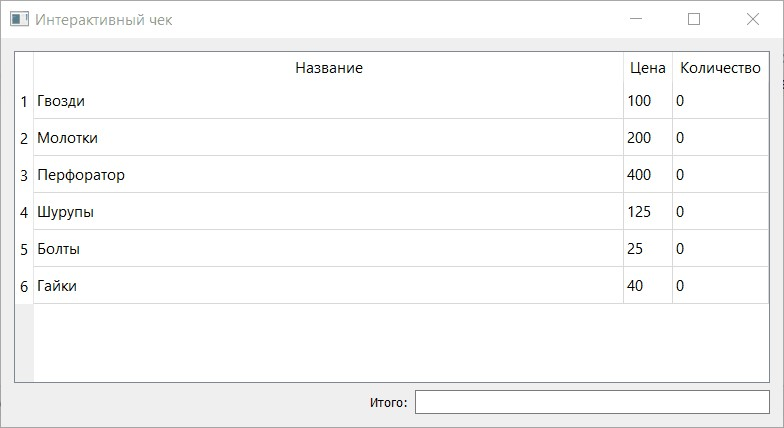

Напишите приложение «Текстовый флаг» с графическим пользовательским интерфейсом на PyQT. Пользователь должен иметь возможность выбрать цвет для каждой из трёх полос флага с помощью Radio Button из нескольких (3–5) вариантов. После выбора и нажатия на кнопку «Нарисовать» программа должна выводить сообщение, соответствующее выбранным цветам. Например: «Красный, Зелёный, Белый».
Напишите программу «Записная книжка» с графическим пользовательским интерфейсом на PyQT, используя необходимые виджеты. Пользователь должен иметь возможность ввести имя контакта и его номер. После добавление данные должны отображаться в List Widget.
Вам дан файл в формате csv с ценами на товары некоторого магазина содержащий название товара и его цену через разделитель ’;’. С помощью виджетов PyQT отобразите содержимое файла в виде таблицы и добавьте колонку «Количество», в которой значения для каждого из товаров первоначально будет равно нулю. Пользователь может менять значение в поле «Количество». Кроме того, добавьте отображение итоговой суммы покупок, используя наиболее подходящий для этого на ваш взгляд виджет. Отображаемое значение в виджете должно рассчитываться как сумма цен товаров, умноженных на их количество. При изменении количества любого из товаров должна пересчитываться итоговая сумма.
